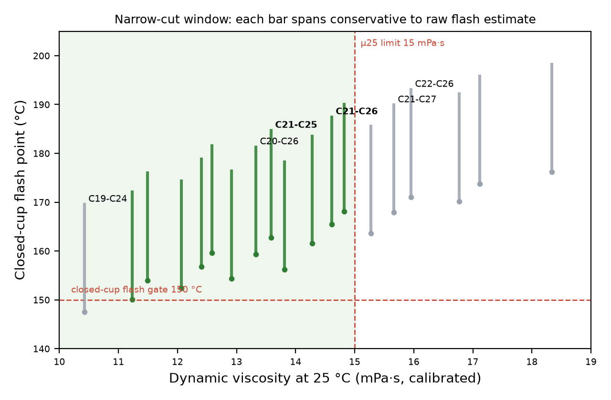

Short answer: yes, in simulation. A narrow cut of about C21–C25 meets the OCP viscosity limit (μ25 ≈ 13.6 mPa·s vs ≤ 15), Tier 1 natural convection (FOM1 ≈ 36.8 vs ≥ 35) and the closed-cup flash gate (≈ 163–189 °C vs ≥ 150 °C). Removing only the light tail is not enough: it raises viscosity past the limit, so the heavy end must be cut too.
This is a computational screening from public data, not a measurement of a real cut. Closed-cup flash (ASTM D93), autoignition (ASTM E659), Dk/Df and dielectric strength still need laboratory tests.
Design window

Each bar spans the conservative to raw flash estimate; green cuts meet μ25 ≤ 15, FOM1 ≥ 35 and flash ≥ 150 °C.
Window scan
| Cut | μ25 (mPa·s) | FOM1 | KV100 (cSt) | Closed-cup flash (°C) | Meets gates |
|---|
Flash range = conservative (calibrated to a wide commercial 2 cSt cut) to raw model. An independent cross-check with real n-alkane vapour-pressure data gives 189 °C for C21–C25 and 192 °C for C21–C26, hence the 163–189 °C quoted on the slide.
How it was simulated
The cut's boiling curve is split into 20 pseudo-components. DWSIM 9.0.5's own petroleum methods give each one's
molecular weight and critical properties (Riazi–Daubert), acentric factor (Lee–Kesler) and viscosity (Abbott).
Viscosities are blended by the Refutas method; vapour pressures (Lee–Kesler) and Jones-rule flammability limits give the
closed-cup flash point by Le Chatelier's rule. The flash route was cross-checked with real n-alkane vapour-pressure data
(thermo library).
Validation: n-hexadecane flash 128 vs 127 °C; squalane 218 vs 210 °C; measured 2 cSt Group III μ25 13.3 vs 13.0 mPa·s; narrow-cut GTL fluid 189 vs 184–191 °C closed cup. A wide 2 cSt cut reads ~22 °C high (its real light tail is unknown), which sets the conservative end of each flash range.
Downloads
Sources: CRC Report AVFL-37 (Southwest Research Institute, 2022); OCP Base Specification for Immersion Fluids (2022) and Immersion Requirements Rev 2.1 (2023); Chevron patent US7846880B2; Shell Diala S4 ZX-I and S5 X data sheets; SK Lubricants YUBASE 2 SDS. B. Chiramel · ADIPEC 2026.